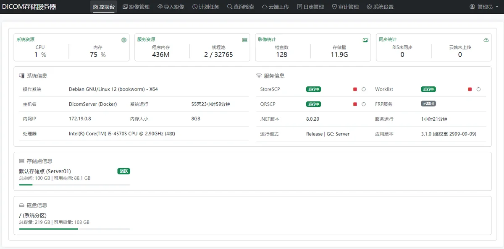
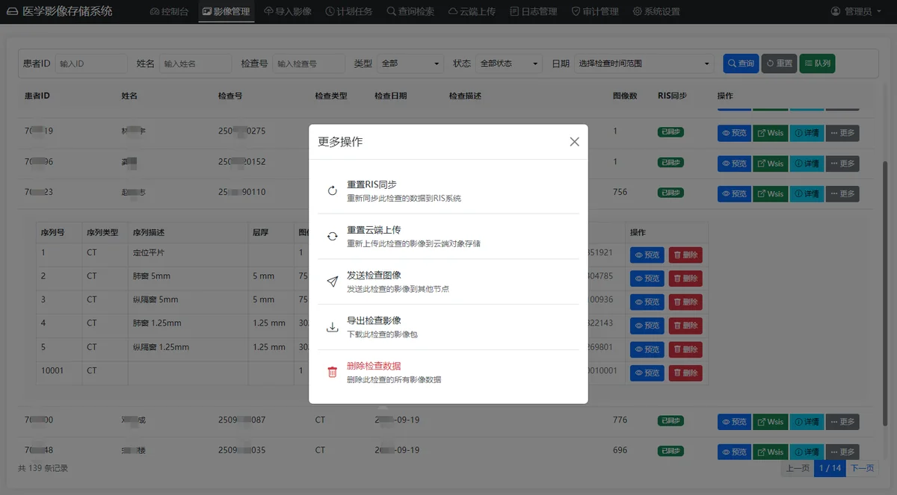
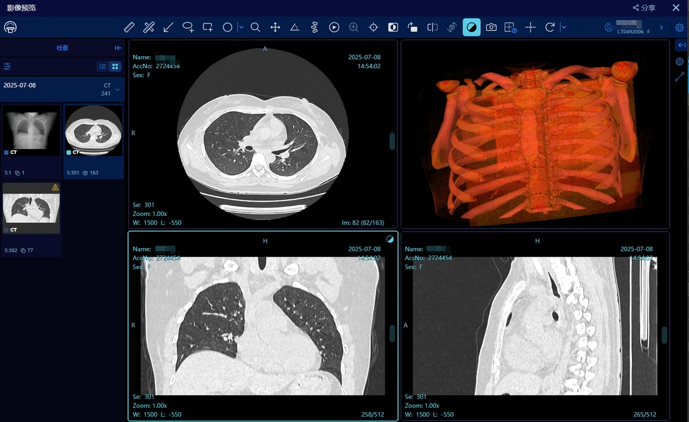

产品概览
医学影像存储系统是一款专业的医学影像存储与管理平台，为医疗机构提供 DICOM 全栈服务与影像存储管理能力。系统支持多种影像获取方式，灵活对接各类医疗设备和信息系统，实现影像的统一归档、管理与共享。
系统预览



DICOM 服务
DICOM 存储服务（Store SCP）
- 标准 DICOM C-STORE 服务
- 支持无损压缩存储与实时存储监控
- 多节点配置与请求权限控制
DICOM 工作列表（Worklist SCP）
- 标准 Modality Worklist 实现
- 多数据源支持（数据库、API 接口）
- 支持 MPPS（N-CREATE/N-SET）与字符集转换
- 多节点配置与请求权限控制
DICOM 查询检索（Query/Retrieve SCP）
- 支持 C-FIND / C-MOVE / C-GET
- 支持图像实时转码传输与多目标节点配置
- 请求权限控制与审计留痕
DicomWeb 服务接口
- WADO-URI / WADO-RS：支持多帧处理、匿名化、转码与签名认证
- QIDO-RS：支持条件检索、分页与签名认证
- STOW-RS：支持批量归档、DICOM 验证与 API 密钥认证
- LinkViewer / StoreImg / DCMStatic：索引、非标准文件归档、静态文件服务等能力
存储服务
数据库支持
- MySQL / PostgreSQL / SQL Server / TiDB / OceanBase
- 支持数据库分区等扩展能力
存储支持
- 本地文件系统、网络共享存储（SMB/CIFS）、对象存储（OSS）
- 存储空间监控与自动存储管理
运维与管理
- 控制台监控：服务状态、系统资源、存储空间与指标分析
- 影像管理：检查列表、预览、删除、回传与同步状态维护
- 导入导出：标准 DICOM 导入、批量上传、打包导出与自包含查看器
- 计划任务：回传任务、同步任务与自定义任务
- 日志与审计：访问审计、操作审计与检查审计
- 系统设置：节点配置、用户角色、API 密钥、存储点与基础配置
系统优势
- 标准化：完整 DICOM 与 DicomWeb 服务实现，兼容主流 PACS
- 架构化：支持分布式与容器化部署，便于扩展与高可用
- 灵活存储：多数据库 + 多存储并存，支持监控与分区策略
- 安全可靠：API 密钥认证、签名验证、数据校验与审计追踪
应用场景
- 影像数据集中化：多院区汇聚、历史数据迁移与统一管理
- 设备互联互通：对接设备与院内系统，支撑远程会诊
- 影像云存储：云端备份、分布式存储与远程访问
部署方式
- Docker 部署（推荐）：一键部署、环境隔离、支持集群与自动化运维
- 传统部署：Windows 服务 / Linux 守护进程，支持反向代理与灵活配置
| 适用对象 | 多院区影像汇聚、区域影像中心、影像云存储平台 |
|---|
| 部署方式 | Docker（推荐）/ Windows 服务 / Linux 守护进程 |
|---|